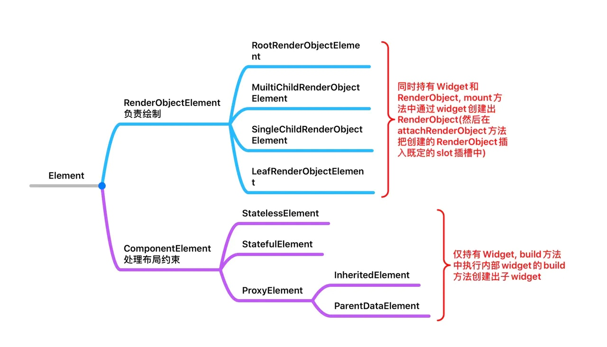
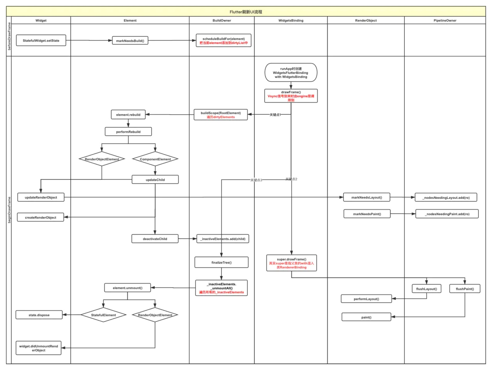
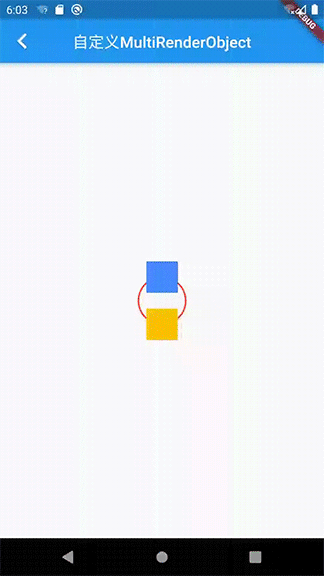

UI层级框架
Flutter的UI框架有三级结构：Widget，Element，RenderObject。Element作为中间层负责维护整个布局的创建和更新，Widget和Element一一对应，但Element并不一定都会持有一个RenderObejct。

LeafRenderObjectWidget
简单通过LeafRenderObjectElement类型自定义了一个RenderObject，效果图如下：

其中一个是RenderObejct实现，另一个是CustomPaint。
自定义RenderObject实现过程
需要重写Widget，Element，RenderObject三部分
SixStarWidget
class SixStarWidget extends LeafRenderObjectWidget {
final Color _paintColor;
final double _starSize;
SixStarWidget(this._paintColor, this._starSize);
/// 在其父Widget对应的Element的updateChild方法中调用
@override
LeafRenderObjectElement createElement() {
return SixStarElement(this);
}
/// 在mount方法中调用
@override
RenderObject createRenderObject(BuildContext context) {
return SixStarObject(_paintColor, _starSize);
}
/// 在widget重建时会执行此方法
/// 这里的renderObject是复用的，如果这里不更新RenderObject, 那么UI不会改变
@override
void updateRenderObject(BuildContext context, SixStarObject renderObject) {
renderObject
..paintColor = _paintColor
..starSize = _starSize;
}
}
SixStarElement
/// 叶子节点
class SixStarElement extends LeafRenderObjectElement {
SixStarElement(LeafRenderObjectWidget widget) : super(widget);
}
SixStarObject
根据RenderObject的注释，RenderObject没有定义坐标系以及各类布局规则，自行实现布局绘制较为复杂，而RenderBox定义了与android相同的笛卡尔直角坐标系以及布局所依赖的其他多种规则。除非不想使用直角坐标系，应该用RenderBox替换RenderObject。
所以这里我们还是乖乖听话，直接选择从RenderBox入手。
import 'dart:math';
import 'package:flutter/material.dart';
import 'package:flutter/rendering.dart';
/// RenderBox内部实现了RenderObject要求必须重写的几个方法, 并提供了笛卡尔二维坐标系
/// [CustomPaint]继承自[SingleChildRenderObjectWidget]: 与完全自定义的RenderBox的相比, 缺少了一自定义的API, 例如不能指定isRepaintBoundary
///
/// 四部分比较重要的点:
/// 1. [_paint], [_paintColor], [_starSize]
/// 2. [layout]和[paint], [performLayout]和[performResize]
/// 3. [isRepaintBoundary], [sizedByParent]
/// 4. [hitTest], [hitTestSelf], [hitTestChildren]
class SixStarRenderObject extends RenderBox {
/// 画笔
final Paint _paint = Paint()
..strokeWidth = 2
..style = PaintingStyle.stroke // 画线, 不填充包裹路径
..isAntiAlias = true // 抗锯齿
..strokeCap = StrokeCap.round // 线条端点样式
..strokeJoin = StrokeJoin.round; // 线条交汇处样式
/// 属性1
Color _paintColor;
set paintColor(Color value) {
if (value == _paintColor) {
return;
}
_paintColor = value;
_paint.color = _paintColor;
// 在属性变化时更新PipelineOwner的待paint待更新列表: PipelineOwner._nodesNeedingPaint.add(this);
markNeedsPaint();
}
/// 属性2, 因为RenderObject是复用的, 所以必须自己维护
double _starSize;
set starSize(value) {
if (_starSize == value) {
return;
}
_starSize = value;
// 在属性变化时更新PipelineOwner的待layout列表: PipelineOwner._nodesNeedingLayout.add(this);
markNeedsLayout();
}
SixStarRenderObject(this._paintColor, this._starSize) {
_paint.color = _paintColor;
}
/// 重写为true或者用[RepaintBoundary]包裹该Widget时会规定此Widget不会影响父布局, 如果不重写可能会出现相对于父布局的offset偏移
/// 在[markNeedsPaint]时会判断此属性, 如果false会调用[parent.markNeedsPaint]
///
/// [isRepaintBoundary] 绘制边界
/// [relayoutBoundary] 布局边界
@override
bool get isRepaintBoundary => true;
/// 用来计算当前RenderObject布局, 并通知child调用自己的layout方法
///
/// 根据父类方法中的注释，子类不应该重写此方法，
/// 子类应该通过重写会在此方法中被调用的performResize()和performLayout()来完成具体的layout操作
/// 另外，layout中最后会调用[markNeedsPaint]
///
/// param: [constraints] 指父节点对子节点的大小约束, 根据父节点的布局逻辑确定(BoxConstraints)
/// param: [parentUsesSize] 用于确定[relayoutBoundary], 表示子节点的布局变化是否影响父节点
@override
void layout(Constraints constraints, {bool parentUsesSize = false}) {
super.layout(constraints, parentUsesSize: parentUsesSize);
}
/// param: [context]含义是绘制的位置，可以自此获取到canvas对象，另外它与BuildContext没有任何联系
/// param: [offset]是取自父节点的[BoxParentData], 所以设置[isRepaintBoundary]为true后不再有offset
@override
void paint(PaintingContext context, Offset offset) {
final canvas = context.canvas..translate(offset.dx, offset.dy);
final width = size.width;
Offset point1Top = Offset(width / 2, 0);
Offset point1Left = Offset(width * (2 - sqrt(3)) / 4, width * 3 / 4);
Offset point1Right = Offset(width * (2 + sqrt(3)) / 4, width * 3 / 4);
Offset point2Left = Offset(width * (2 - sqrt(3)) / 4, width * 1 / 4);
Offset point2Right = Offset(width * (2 + sqrt(3)) / 4, width * 1 / 4);
Offset point2Bottom = Offset(width / 2, width);
canvas.drawLine(point1Top, point1Left, _paint);
canvas.drawLine(point1Left, point1Right, _paint);
canvas.drawLine(point1Right, point1Top, _paint);
canvas.drawLine(point2Left, point2Bottom, _paint);
canvas.drawLine(point2Bottom, point2Right, _paint);
canvas.drawLine(point2Right, point2Left, _paint);
canvas.drawCircle(Offset(width / 2, width / 2), width / 2, _paint);
}
/// [performLayout]和[performResize]都是在[layout]中被调用的
/// 如果[sizedByParent]为false则必须重写此方法, 否则红屏
@override
void performLayout() {
size = constraints.constrain(Size(_starSize, _starSize));
}
/// 只有[sizedByParent]为true,即父布局size改变引起当前resize时, [performResize]才会被调用, 而[performLayout]是必定会被调用
@override
void performResize() {
super.performResize();
}
@override
bool get sizedByParent => false;
/// onTap判断
@override
bool hitTest(BoxHitTestResult result, {@required Offset position}) {
return super.hitTest(result, position: position);
}
/// Used by [hitTest]: 作为叶子widget, 想要监听onTap就必须return true
/// 只影响GestureDetector的behavior是deferToChild方式的表现, 不影响HitTestBehavior.opaque(不透明)
@override
bool hitTestSelf(Offset position) {
return true;
}
/// Used by [hitTest]: 如果有child时需要重写
@override
bool hitTestChildren(BoxHitTestResult result, {Offset position}) {
return super.hitTestChildren(result, position: position);
}
}
UI更新时的处理流程
为什么重写上面的方法就可以实现布局的更新呢？还有，Flutter可以实现响应式更新UI的原理是什么呢？既然setState不是开启界面刷新的直接动作，那什么时候才会真正开始刷新UI呢？
答案就是Vsync垂直同步信号到来时。以获取到Vsync信号为分界线，UI刷新流程分为beforeDrawFrame和beginDrawFrame两部分，下面整体介绍一下：
在刷新页面setState时（beforeDrawFrame）
void setState(VoidCallback fn) {
final dynamic result = fn() as dynamic;
if (result is Future) {
throw FlutterError...
}
_element.markNeedsBuild();
}
其中StatefulElement.markNeedsBuild()会把element标记为_dirty = true，然后调用BuildOwner.scheduleBuildFor(this)，把element添加到dirty列表中：
void scheduleBuildFor(Element element) {
_dirtyElements.add(element);
element._inDirtyList = true;
}
记住这个类BuildOwner，它是承接前后两个流程的桥梁。 beforeDrawFrame这一部分很简单，只做了把element添加到dirtyList一件事。
下一个Vsync信号到达后（beginDrawFrame）
Vsync信号到达后，flutter-engine层会自动调用到framework层的WidgetsBinding.drawFrame：
void drawFrame() {
...
buildOwner.buildScope(renderViewElement); // 关键点1
super.drawFrame(); // 关键点2
buildOwner.finalizeTree(); // 关键点3
...
}
关键点1
BuildOwner.buildScope(RenderViewElement)方法会遍历_dirtyElements执行element.rebuild（这里的RenderViewElement就是根节点RootRenderObjectElement，它在runApp中被构建出来）：
void buildScope(Element context, [VoidCallback callback]) {
if (callback == null && _dirtyElements.isEmpty) return;
int dirtyCount = _dirtyElements.length;
int index = 0;
try {
while (index < dirtyCount) {
_dirtyElements[index].rebuild(); // 执行了element.performRebuild()
index += 1;
}
} finally {
for (Element element in _dirtyElements) {
element._inDirtyList = false;
}
_dirtyElements.clear();
}
}
这里的performRebuild方法在上面整理的Element依赖图中的两个Element子类被分别重写：
RenderObjectElement会执行updateRenderObject，而ComponentElement中会执行updateChild，这个方法是Flutter布局构建的核心，也就是我们平时所说的view-diff算法所在，它的总策略如下：
| - | newWidget == null | newWidget != null |
|---|---|---|
| child == null | Returns null. | Returns new [Element]. |
| child != null | Old child is removed, returns null. | Old child updated if possible, returns child or new [Element]. |
- 看到在上面流程中会在多个位置执行
widget.updateRenderObject，这个方法我们很眼熟，之前SixStarWidget里重写过。在这个方法中，我们更新了RenderObject的相关属性，在RenderObject内部的setter方法中调用了以下方法：- 在
markNeedsPaint()时会把RenderObject自身添加到PipelineOwner的_nodesNeedingPaint列表 - 在
markNeedsLayout()时会把RenderObject自身添加到PipelineOwner的_nodesNeedingLayout列表
- 在
现在我们的UI更新数据已经来到了PipelineOwner。
关键点2
关键点2处WidgetsBinding类内的super.drawFrame()是执行的mixin RenderBinding混入类的方法：
@protected
void drawFrame() {
assert(renderView != null);
pipelineOwner.flushLayout(); // 遍历_nodesNeedingLayout列表，执行performLayout()
pipelineOwner.flushCompositingBits();
pipelineOwner.flushPaint(); // 遍历_nodesNeedingPaint列表，执行到paint(context, offset)
renderView.compositeFrame(); // this sends the bits to the GPU
pipelineOwner.flushSemantics(); // this also sends the semantics to the OS.
}
关键点3
上面关键点1中updateChild中执行的deactivateChild(child)中会把要移除的节点添加到BuildOwner的待移除列表中BuildOwner_inactiveElements.add(child);
然后在关键点3处的buildOwner.finalizeTree()中会执行_inactiveElements._unmountAll()，遍历所有待移除element：
element.visitChildren((Element child) {
assert(child._parent == element);
_unmount(child);
});
// 在RenderObjectElement子类中执行widget.didUnmountRenderObject
// 在StatefulElement中执行_state.dispose()
element.unmount();
这就是Flutter的整个刷新流程，补充一张流程图

CustomPaint
CustomPaint也可以做到类似效果，这种方式也是重写了三层结构，不过进行了封装：
Widget就是CustomPaint自身，它继承了SingleChildRenderObjectWidgetElement是SingleChildRenderObjectElementRenderObject是RenderCustomPaint，它继承了RenderProxyBox extends RenderBox with xx。
CustomPaint的一个很大优势在于它是一个会自动重建的Widget，所以不用像RenderObject一样要考虑维护参数更新、处理繁琐的标记dirty等。一般情况下，使用CustomPaint自定义widget是更好地选择。
import 'dart:math';
import 'package:flutter/material.dart';
/// CustomPaint只是为了方便开发者封装的一个代理类, 通过内部[RenderCustomPaint]的paint方法将[Canvas]和[CustomPainter]连接起来实现了最终的绘制
/// [RenderCustomPaint]是它的[RenderObject]
/// 因为这是一个Widget, 每次刷新页面都会重建, 所以内部的[CustomPainter][Size]也都会重新构建, 所以不用我们像在[RenderObject]里一样手动维护内部参数
class SixStarPaint extends CustomPaint {
final Color _paintColor;
final double _starSize;
SixStarPaint(this._paintColor, this._starSize);
@override
CustomPainter get painter => _SixStarPainter(_paintColor);
@override
Size get size => Size(_starSize, _starSize);
}
class _SixStarPainter extends CustomPainter {
Paint _paint;
_SixStarPainter(Color paintColor) {
_paint = Paint()
..color = paintColor
..strokeWidth = 2
..style = PaintingStyle.stroke // 画线, 不填充包裹路径
..isAntiAlias = true // 抗锯齿
..strokeCap = StrokeCap.round // 线条端点样式
..strokeJoin = StrokeJoin.round; // 线条交汇处样式
}
@override
void paint(Canvas canvas, Size size) {
double _starSize = size.width;
Offset point1Top = Offset(_starSize / 2, 0);
Offset point1Left = Offset(_starSize * (2 - sqrt(3)) / 4, _starSize * 3 / 4);
Offset point1Right = Offset(_starSize * (2 + sqrt(3)) / 4, _starSize * 3 / 4);
Offset point2Left = Offset(_starSize * (2 - sqrt(3)) / 4, _starSize * 1 / 4);
Offset point2Right = Offset(_starSize * (2 + sqrt(3)) / 4, _starSize * 1 / 4);
Offset point2Bottom = Offset(_starSize / 2, _starSize);
canvas.drawLine(point1Top, point1Left, _paint);
canvas.drawLine(point1Left, point1Right, _paint);
canvas.drawLine(point1Right, point1Top, _paint);
canvas.drawLine(point2Left, point2Bottom, _paint);
canvas.drawLine(point2Bottom, point2Right, _paint);
canvas.drawLine(point2Right, point2Left, _paint);
canvas.drawCircle(Offset(_starSize / 2, _starSize / 2), _starSize / 2, _paint);
}
@override
bool shouldRepaint(CustomPainter oldDelegate) {
return oldDelegate != this;
}
@override
bool hitTest(Offset position) {
return super.hitTest(position);
}
}
MultiChildRenderObejctWidget
再来尝试一下如何自定义一个可以包含多个子控件的父布局。
首先呢，我们先给自己定一个目标：
- 所有child按角度平均分布到一个圆环上, 以圆环最高点为起点, 顺时针排列；
- 保证所有的child不能重叠；
- 以子View中最大的宽高为标准计算ViewGroup宽高, 即较小child的宽高也按照子View中最大的宽高计算；
效果如下：

具体实现
自定义View需要同时构建Widget、Element、RenderObject三个层次，下面就依次说明下，同时我会与自定义叶子节点的对应步骤做同步比较。
Widget
自定义Widget我们是直接继承了RenderObjectWidget，虽然系统给我们提供了LeafRenderObjectWidget以及MultiChildRenderObjectWidget，不过这两个类很简单，直接继承RenderObjectWidget有利于我们了解其原理。
import 'package:flutter/material.dart';
import 'package:flutter/rendering.dart';
import 'package:flutter_demo/widgets/render/multirender/RingElement.dart';
import 'package:flutter_demo/widgets/render/multirender/RingRenderObject.dart';
/// 其实绝大部分是复制了系统提供的[CustomMultiChildLayout]及其父类[MultiChildRenderObjectWidget]
/// 全部复制出来可以更清晰的把握内部原理
/// PS: [Row]和[Column]的共同父类[Flex]以及[Stack] 均继承自 [MultiChildRenderObjectWidget]
class RingWidget extends RenderObjectWidget {
/// If this list is going to be mutated, it is usually wise to put [Key]s on
/// the widgets, so that the framework can match old configurations to new
/// configurations and maintain the underlying render objects.
final List<Widget> children;
/// childrenList没有重写
RingWidget({Key key, this.children = const <Widget>[]})
: assert(children != null),
assert(() {
final int index = children.indexOf(null);
if (index >= 0) {
throw FlutterError("$runtimeType的子View不能包含null, 但下标$index处是null了, 快tm检查一下吧!");
}
return true;
}()),
super(key: key);
@override
RingElement createElement() => RingElement(this);
@override
RingRenderObject createRenderObject(BuildContext context) {
return RingRenderObject();
}
@override
void updateRenderObject(BuildContext context, RingRenderObject renderObject) {
// 这里无须更新RenderObject, 因为在RingElement中处理了更新
// 其混入类ContainerRenderObjectMixin内部维护了child的添加/移除/换位等操作
}
}
LeafRenderObjectWidget与MultiChildRenderObjectWidget两个的主要区别在于：
LeafRenderObjectWidget需要在updateRenderObject中处理RenderObject的更新，MultiChildRenderObjectWidget则不需要（原因在下面Element中介绍）MultiChildRenderObjectWidget中除了其他自定义参数，需要包含一个List<Widget> children，此参数用于提供给Element使用。
Element
与Widget类似的，我们也是直接继承了RenderObjectElement，而不是LeafRenderObjectElement和MultiChildRenderObjectElement。
import 'dart:collection';
import 'package:flutter/material.dart';
import 'package:flutter/rendering.dart';
import 'package:flutter_demo/widgets/render/multirender/RingWidget.dart';
/// 复制自[MultiChildRenderObjectElement], 没有做逻辑上的修改
class RingElement extends RenderObjectElement {
RingElement(RingWidget widget)
: assert(!debugChildrenHaveDuplicateKeys(widget, widget.children)),
super(widget);
@override
RingWidget get widget => super.widget;
/// child列表, 经_forgottenChildren过滤
@protected
@visibleForTesting
Iterable<Element> get children => _children.where((Element child) => !_forgottenChildren.contains(child));
List<Element> _children;
/// 避免O(n^2)时间复杂度的重复移除
final Set<Element> _forgottenChildren = HashSet<Element>();
/// attachRenderObject时调用 <= updateChild 中 inflateWidget
@override
void insertChildRenderObject(RenderObject child, IndexedSlot<Element> slot) {
final ContainerRenderObjectMixin<RenderObject, ContainerParentDataMixin<RenderObject>> renderObject =
this.renderObject as ContainerRenderObjectMixin<RenderObject, ContainerParentDataMixin<RenderObject>>;
assert(renderObject.debugValidateChild(child));
// 代替了Widget.updateRenderObject
renderObject.insert(child, after: slot?.value?.renderObject);
assert(renderObject == this.renderObject);
}
/// _updateSlot时调用 <= updateChild 中 updateSlotForChild
@override
void moveChildRenderObject(RenderObject child, IndexedSlot<Element> slot) {
final ContainerRenderObjectMixin<RenderObject, ContainerParentDataMixin<RenderObject>> renderObject =
this.renderObject as ContainerRenderObjectMixin<RenderObject, ContainerParentDataMixin<RenderObject>>;
assert(child.parent == renderObject);
// 代替了Widget.updateRenderObject
renderObject.move(child, after: slot?.value?.renderObject);
assert(renderObject == this.renderObject);
}
/// detachRenderObject时调用 <= updateChild 中 deactivateChild
@override
void removeChildRenderObject(RenderObject child) {
final ContainerRenderObjectMixin<RenderObject, ContainerParentDataMixin<RenderObject>> renderObject =
this.renderObject as ContainerRenderObjectMixin<RenderObject, ContainerParentDataMixin<RenderObject>>;
assert(child.parent == renderObject);
// 代替了Widget.updateRenderObject
renderObject.remove(child);
assert(renderObject == this.renderObject);
}
/// 避免O(n^2)时间复杂度的重复移除, 与设定GlobalKey的Widget的缓存复用有关
@override
void forgetChild(Element child) {
assert(_children.contains(child));
assert(!_forgottenChildren.contains(child));
_forgottenChildren.add(child);
super.forgetChild(child);
}
/// 提供遍历children方法给framework类update时调用
@override
void visitChildren(ElementVisitor visitor) {
for (final Element child in _children) {
if (!_forgottenChildren.contains(child))
visitor(child);
}
}
/// 新创建Element时调用
@override
void mount(Element parent, dynamic newSlot) {
super.mount(parent, newSlot);
_children = List<Element>(widget.children.length);
Element previousChild;
for (int i = 0; i < _children.length; i += 1) {
// 包含diff方法: updateChild
final Element newChild = inflateWidget(widget.children[i], IndexedSlot<Element>(i, previousChild));
_children[i] = newChild;
previousChild = newChild;
}
}
@override
void update(RingWidget newWidget) {
super.update(newWidget);
assert(widget == newWidget);
// 对于LeafRenderObjectElement, 这里是updateChild;
// 在MultiChildRenderObjectElement里, 是updateChildren
_children = updateChildren(_children, widget.children, forgottenChildren: _forgottenChildren);
_forgottenChildren.clear();
}
}
LeafRenderObjectElement和MultiChildRenderObjectElement的区别是：
MultiChildRenderObjectElement需要提供insertChildRenderObject、moveChildRenderObject、removeChildRenderObject、visitChildren等方法；- 在
mount以及update方法中，MultiChildRenderObjectElement需要遍历_children分别执行，而LeafRenderObjectElement只需要处理自身即可。
RenderObject
import 'dart:math';
import 'package:flutter/material.dart';
import 'package:flutter/rendering.dart';
/// 实现目标:
/// 1. 所有child按角度平均分布到一个圆环上, 以圆环最高点为起点, 顺时针排列
/// 2. 保证所有的child不能重叠
/// 3. 以子View中最大的宽高为标准计算ViewGroup宽高, 即较小child的宽高也按照子View中最大的宽高计算
///
/// ps: 也可以不使用[RenderBox], 使用[RenderCustomMultiChildLayoutBox]实现, 它通过[MultiChildLayoutDelegate]实现, 与[CustomPaint]的设计思路差不多
/// ps: ContainerRenderObjectMixin是系统默认提供的用于维护child绘制相关的工具类, 包括child的添加/移除/换位等;
/// RenderBoxContainerDefaultsMixin则补充了几个关于child的默认操作, 例如defaultPaint/defaultHitTestChildren方法;
/// Flex/Stack都混入了以上两个Mixin.
///
/// 六部分比较重要的点:
/// 1. [_paint]
/// 2. [layout] 和 [paint] , [performLayout]和[performResize]
/// 3. [isRepaintBoundary], [sizedByParent]
/// 4. [hitTest], [hitTestSelf], [hitTestChildren]
/// 5. [setupParentData]
/// 6. [computeMaxIntrinsicHeight], [computeMinIntrinsicHeight], [computeMaxIntrinsicWidth], [computeMinIntrinsicWidth]
class RingRenderObject extends RenderBox
with ContainerRenderObjectMixin<RenderBox, MultiChildLayoutParentData>, RenderBoxContainerDefaultsMixin<RenderBox, MultiChildLayoutParentData> {
/// 画笔
final Paint _paint = Paint()
..strokeWidth = 2
..style = PaintingStyle.stroke // 画线, 不填充包裹路径
..isAntiAlias = true // 抗锯齿
..strokeCap = StrokeCap.round // 线条端点样式
..strokeJoin = StrokeJoin.round // 线条交汇处样式
..color = Colors.red; // 颜色
/// 缓存childSize, 避免一帧中多次循环
double _childSize = 0.0;
RingRenderObject({List<RenderBox> children}) {
// 循环insert, 来自[ContainerRenderObjectMixin]
addAll(children);
}
/// [RenderCustomMultiChildLayoutBox]和[Flex]均重写, 判断了自定义的[ParentData]
/// [ParentData]中存储了父布局提供给当前节点的参数, 包括偏移量以及下一个节点等
@override
void setupParentData(RenderBox child) {
if (child.parentData is! MultiChildLayoutParentData) {
child.parentData = MultiChildLayoutParentData();
}
}
/// [RenderCustomMultiChildLayoutBox]和[Flex]均使用了[RenderBoxContainerDefaultsMixin]的[defaultPaint]方法
/// 其中[Flex]在[overflow]设置特殊值时进行了其他策略, 没有特殊要求前我们先直接使用[defaultPaint]
@override
void paint(PaintingContext context, Offset offset) {
// 绘制圆环
double childSize = _getChildSize();
double radius = _getRadius(childSize);
context.canvas
..translate(offset.dx, offset.dy)
..drawCircle(_getCircleCenter(childSize, radius), radius, _paint);
// 此方法来自[RenderBoxContainerDefaultsMixin], 用于处理child的绘制
defaultPaint(context, offset);
// 一帧绘制完成, 清除缓存数据
_childSize = 0.0;
}
/// 根据父类方法中的注释，子类不应该重写此方法，
/// 子类应该通过重写会在此方法中被调用的performResize()和performLayout()来完成具体的layout操作
@override
void layout(Constraints constraints, {bool parentUsesSize = false}) {
super.layout(constraints, parentUsesSize: parentUsesSize);
}
@override
void performLayout() {
_layoutChild();
double childSize = _getChildSize();
double radius = _getRadius(childSize);
Offset circleCenter = _getCircleCenter(childSize, radius);
// 如果[sizedByParent]为false的话, 就需要我们自己更新size
size = constraints.constrain(Size(circleCenter.dx * 2, circleCenter.dy * 2));
_positionChild(radius, circleCenter);
}
/// 遍历调用child.layout
void _layoutChild() {
// 此字段来自[ContainerRenderObjectMixin]
RenderBox child = firstChild;
while (child != null) {
BoxConstraints innerConstraints = BoxConstraints(
maxWidth: constraints.maxWidth,
minWidth: constraints.minWidth,
maxHeight: constraints.maxHeight,
minHeight: constraints.minHeight,
);
// parentUsesSize表示child的layout变化影响this
child.layout(innerConstraints, parentUsesSize: true);
final MultiChildLayoutParentData childParentData = child.parentData;
child = childParentData.nextSibling;
}
}
/// 遍历把child放在各自偏移量上
/// 注意, sin和cos的入参都是弧度, 不是角度
void _positionChild(double radius, Offset circleCenter) {
double angelLevel = 2 * pi / childCount;
RenderBox child = firstChild;
int index = 0;
double angle = 0;
double positionDx = 0;
double positionDy = 0;
while (child != null) {
final MultiChildLayoutParentData childParentData = child.parentData;
positionDx = circleCenter.dx + radius * sin(angle);
positionDy = circleCenter.dy - radius * cos(angle);
childParentData.offset = Offset(positionDx - child.size.width / 2, positionDy - child.size.height / 2);
// 下一个child数据
child = childParentData.nextSibling;
index++;
angle = angelLevel * index;
}
}
/// 计算布局圆环圆心
Offset _getCircleCenter(double childSize, double radius) {
double circlePoint = radius + childSize / 2;
return Offset(circlePoint, circlePoint);
}
/// 计算布局圆环半径
/// 注意, 获取child.size之前必须要执行过[child.layout]才可以
double _getRadius(double childSize) {
// +1表示总个数, 这里简化计算, 只去除第一个的上半部分, 没有去除最后一个的下半部分, 所以半径会偏大
return (_indexOfBottom + 1 - 0.5) * childSize / 2;
}
/// 获取children中最大的宽高
double _getChildSize() {
if (_childSize < 0.1) {
double maxWidth = _getMaxSizeOfChildren(0, (RenderBox child, double extent) {
return child.size.width;
});
double maxHeight = _getMaxSizeOfChildren(0, (RenderBox child, double extent) {
return child.size.height;
});
_childSize = max(maxHeight, maxWidth);
}
return _childSize;
}
/// 只有[sizedByParent]为true, 即父布局size改变引起当前resize时, [performResize]才会被调用, 而[performLayout]是必定会被调用
/// [sizedByParent]为false的话, 此方法不用重写
@override
void performResize() {
super.performResize();
}
@override
bool get isRepaintBoundary => true;
@override
bool get sizedByParent => false;
/// 计算固有最大高度
/// 此系列方法的作用是: 在父类执行layout之前就可以获取到本view的宽高
/// 主要是提供给外部父view调用, 对于此测试demo, 这里是否重写并不影响效果
@override
double computeMaxIntrinsicHeight(double width) {
return (_indexOfBottom + 1) *
_getMaxSizeOfChildren(width, (RenderBox child, double extent) {
return child.getMaxIntrinsicHeight(extent);
});
}
@override
double computeMaxIntrinsicWidth(double height) {
return (_indexOfBottom + 1) *
_getMaxSizeOfChildren(height, (RenderBox child, double extent) {
return child.getMaxIntrinsicWidth(extent);
});
}
@override
double computeMinIntrinsicHeight(double width) {
return (_indexOfBottom + 1) *
_getMaxSizeOfChildren(width, (RenderBox child, double extent) {
return child.getMinIntrinsicHeight(extent);
});
}
@override
double computeMinIntrinsicWidth(double height) {
return (_indexOfBottom + 1) *
_getMaxSizeOfChildren(height, (RenderBox child, double extent) {
return child.getMinIntrinsicWidth(extent);
});
}
/// 根据childSize计算对应宽高: 返回children中最大的childSize
double _getMaxSizeOfChildren(double extend, Function(RenderBox child, double extent) childSize) {
double maxSize = 0.0;
MultiChildLayoutParentData childParentData;
RenderBox current = firstChild;
while (current != null) {
maxSize = max(maxSize, childSize(current, extend));
childParentData = current.parentData;
current = childParentData.nextSibling;
}
return maxSize;
}
/// 获取最下方index, ~/为向下取整
int get _indexOfBottom => childCount ~/ 2;
/// 内部 hitTestChildren || hitTestSelf
@override
bool hitTest(BoxHitTestResult result, {Offset position}) {
return super.hitTest(result, position: position);
}
/// 在[hitTest]内部判断时优先判断[hitTestChildren], 所以此方法返回true只会在未点击到child时生效
@override
bool hitTestSelf(Offset position) {
return true;
}
/// [RenderCustomMultiChildLayoutBox]和[Flex]均使用了[RenderBoxContainerDefaultsMixin.defaultHitTestChildren]方法
@override
bool hitTestChildren(BoxHitTestResult result, {Offset position}) {
// 来自 RenderBoxContainerDefaultsMixin
return defaultHitTestChildren(result, position: position);
}
}
在上一篇文章中，我按个人理解把SixStarRenderObject分为了四部分，它们在两种RenderObject内的表现有所不同：
paint以及其他属性参数：类似；
layout和paint, performLayout和performResize
SixStarRenderObject：paint绘制自身，performLayout中赋值自身size即可；
RingRenderObject：paint除了绘制自身之外，还需要调用RenderBoxContainerDefaultsMixin#defaultPaint方法处理children的绘制；performLayout中除了赋值自身size之外，还需要遍历children分别执行layout，然后处理偏移量，把各个child按既定规则放在具体位置；
isRepaintBoundary, sizedByParent：一致，即isRepaintBoundary为true，sizedByParent为false
hitTest, hitTestSelf, hitTestChildren
SixStarRenderObject：需要支持点击时仅需要重写hitTestSelf为true即可；
RingRenderObject：不仅需要重写hitTestSelf为true，还需要在hitTestChildren中调用RenderBoxContainerDefaultsMixin#defaultHitTestChildren方法处理children的点击。
除此之外，在RingRenderObject中还需要重写额外两组方法：
计算固有大小相关方法compute(Max/Min)Intrinsic(Height/Width)：它们的作用是在layout方法未执行时根据给定宽高返回固定的高宽；
其实LeafRenderObject也存在这一系列方法，只不过作为叶子节点可以认为未经过layout计算时宽高都为0，但是对于ViewGroup我们需要考虑其child，所以需要重写；
setupParentData(RenderBox child)方法：给child指定ParentData，此参数用于传递父布局所提供的数据，包括偏移量以及下一个节点指针等。
总结
自定义可以添加多个子View的MultiChildRenderObejctWidget以及叶子节点LeafRenderObejctWidget的流程基本一致，而且比较清晰，而且源码中大多提供了默认实现，如果只为了实现功能的话需要重写的方法会更少，比如Element可以直接使用系统提供类，RenderObejct类也可以省略大部分方法。